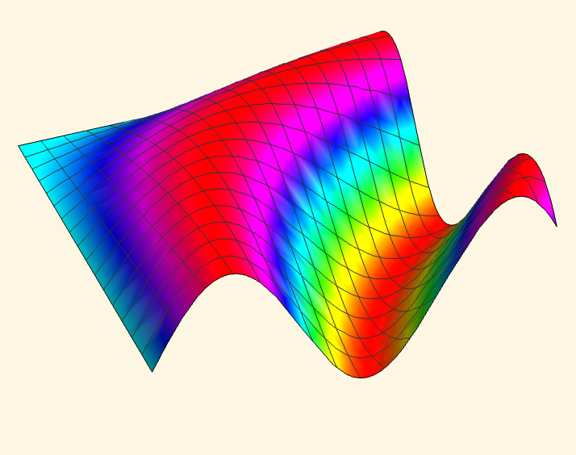
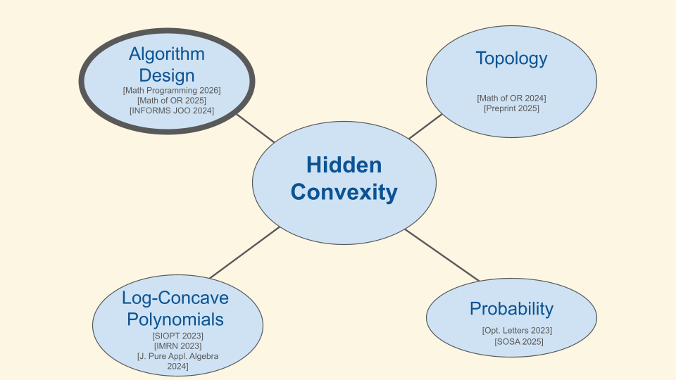
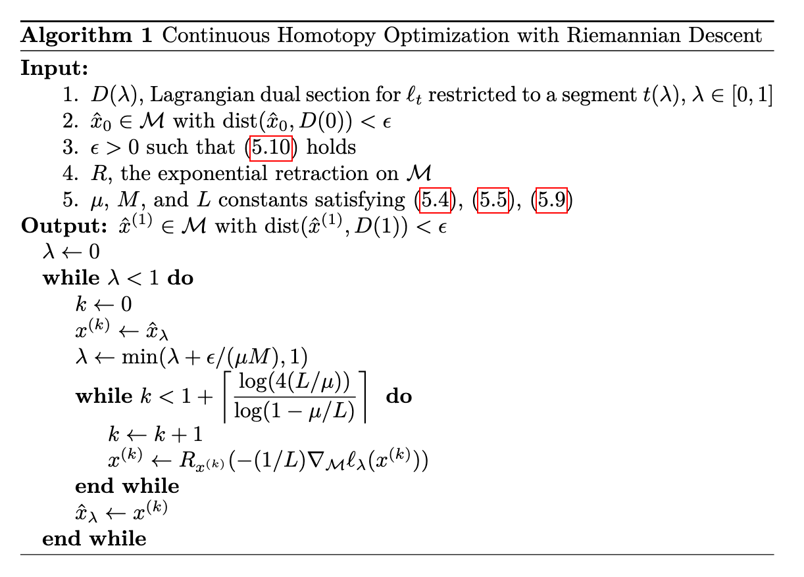
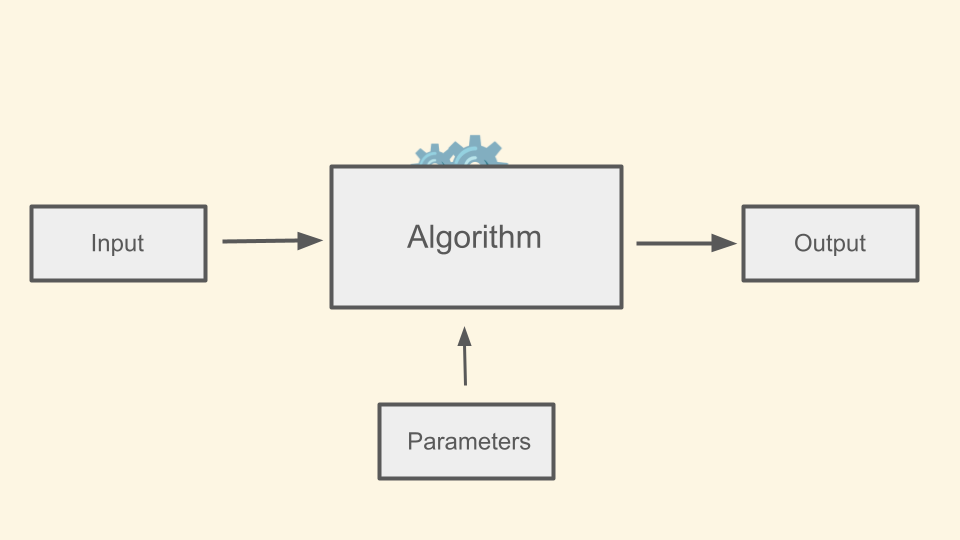
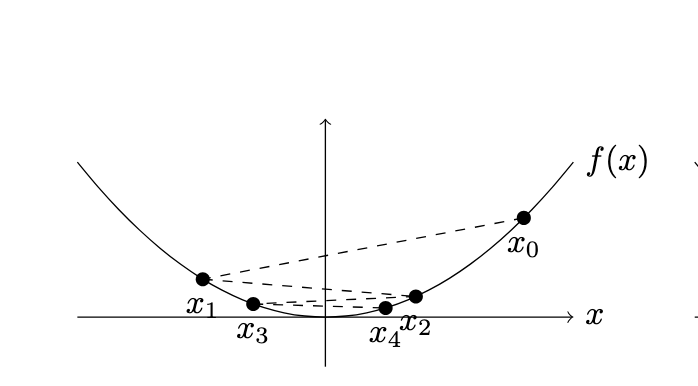
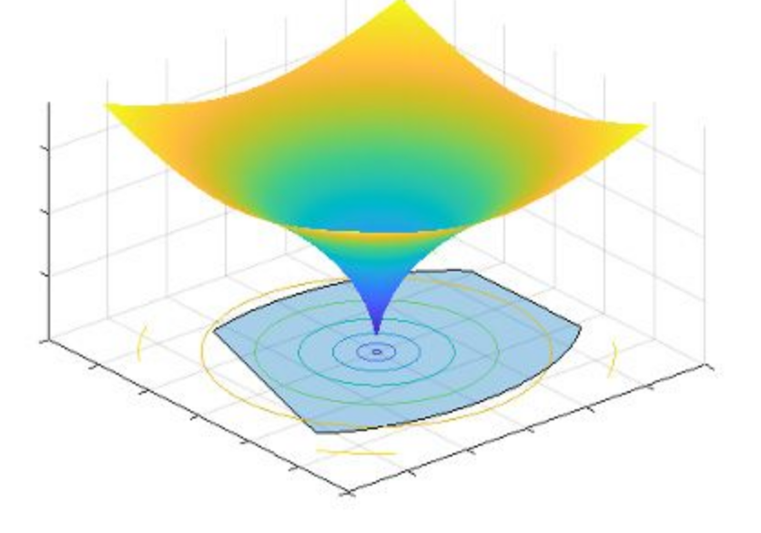
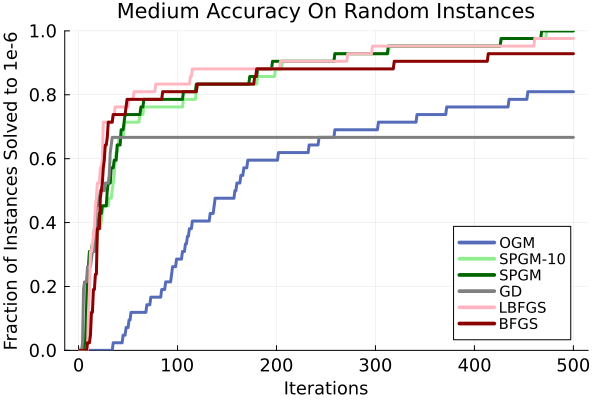

The Surprising Ubiquity of Convex Optimization
Kevin Shu

Optimization is Everywhere
Rosen et al. 2021. Advances in Inference and Representation for Simultaneous Localization and Mapping. Annual Review Control, Robotics, and Autonomous Systems.
Serles et al. 2025. Ultrahigh Specific Strength by Bayesian Optimization of Carbon Nanolattices. Adv. Mater.

Issues with Optimization
Desirata for Optimizers
- Computationally efficient
- Reliable
- Certifiably optimal
What is Convex Optimization?
Convex Set - A set defined by a system of linear inequalities.
Convex Function - A function which is the pointwise minimum of linear functions.
Why Convex Optimization?
- Computationally efficient
- Reliable
- Certifiably optimal
But not all optimization problems are convex!
Convex Reformulations
Example Problem
Minimize \[ x^{\intercal}Ax \] for a matrix $A \in \R^{n \times n}$ with the constraint $\|x\|^2 = 1$.
In general, nether the objective nor the constraint are convex.
Convex Problem
Example Reformulation
We can massage the problem to read \[ \tr(Axx^{\intercal}) \] with the constraint $\tr(xx^{\intercal}) = 1$.
Convex Reformulations
Example Reformulation
We can reformulate the problem: \[ \tr(AX) \] with the constraint $\tr(X) = 1$ and $X \succeq 0$.
This is equivalent, but convex.
We want to solve some problem in engineering or science.
We want to solve some problem in engineering or science.

There may be other formulations of the problem that result in better maps.

Manifestations of hidden convexity in my work
Outline of the Talk
- Introduction
- A Topological Framework for Hidden Convexity
- Lagrangian Dual Sections and Convexity
- Path Tracking Unbalanced Procrustes
- Automatic Design of First-Order Methods
- Performance Estimation Problems
- Long Step Size Gradient Descent
- Subgame Perfect Gradient Method
Convexifying Optimization Problems with Topology1
1. Lagrangian Dual Sections: A Topological View of Hidden Convexity - V Chandrasekaran, T Duff, J Rodriguez, S.
Many fundamental optimization problems can be expressed as constrained problems over nonconvex sets (e.g. manifolds, algebraic varieties).
Examples:
Quadratically Constrained Quadratic Programming (QCQP) - Combinatorics and Power Systems
Stiefel Manifold Optimization - Robotics
Inverse Eigenvalue Problems - Spectral Graph Theory

Example
Satellites in space sometimes need to estimate their orientation.
Two sources of data: positions of distant stars, and a (lossy) internal gyroscopic estimate .
Example
Goal: Find a rotation satisfying two conditions:
- Maps an internal star map to the observed locations of the stars.
- Is not too far from an some fixed rotation matrix.
The set of rotations is called the special orthogonal group $\SO(3)$.
Example
Model:
| min | $\|UX - V\|^2$ |
| s.t. | $\|X - X_0\|^2 \le \epsilon$ |
| $X \in \SO(n)$ |
$U$ and $V$ represent the observed/stored star locations. $X_0$ is estimated rotation matrix.
Example (linearized objective)
Model:
| min | $\tr(V^{\intercal}U X)$ |
| s.t. | $\tr(X_0^{\intercal}X) \le 3 - \epsilon$ |
| $X \in \SO(n)$ |
$U$ and $V$ represent the observed/stored star locations. $X_0$ is estimated rotation matrix.
Hidden Convexity and $\SO(n)$
Theorem (Ramachandran, S., Wang 2024)
If $A_0, A_1 \in \R^{n\times n}$ for $n > 2$, then \[ \{(\tr( A_0^{\intercal} X)\rangle, \tr( A_1^{\intercal} X)) : X \in \SO(n)\} \subseteq \R^2\] is convex.
Means we can apply convex optimization (in particular the ellipsoid algorithm) to the constrained problem.
Many fundamental optimization problems can be expressed as constrained optimization problems over manifolds.
Formulation
\[ \max \{f_0(x) : f_1(x) = c_1, \dots, f_k(x) =c_k, x \in M\}, \]
for some set $M$ and a function $f : M \rightarrow \R^{k+1}$.
Such problems are typically NP-hard. Convex optimization gives bounds on the optimal value.
Formulation
\[ \max \{f_0(x) : f_1(x) = c_1, \dots, f_k(x) =c_k, x \in M\}, \]
for some set $M$ and a function $f : M \rightarrow \R^{k+1}$.
Such problems are typically NP-hard. Convex optimization gives bounds on the optimal value.
Formulation
\[ \max \{f_0(x) : f_1(x) = c_1, \dots, f_k(x) =c_k, x \in M\}, \]
for some set $M$ and a function $f : M \rightarrow \R^{k+1}$.
Reformulation in terms of the image
\[ \max \{y_0 : y_1 = c_1, \dots, y_k =c_k, y \in f(M)\}, \]
for some set $M$ and a function $f : M \rightarrow \R^{k+1}$.
Such problems are typically NP-hard. Convex optimization give bounds on the possible optimal value.
Formulation
\[ \max \{f_0(x) : f_1(x) = c_1, \dots, f_k(x) =c_k, x \in M\}, \]
for some set $M$ and a function $f : M \rightarrow \R^{k+1}$.
Convex Relaxation
\[ \max \{y_0 : y_1 = c_1, \dots, y_k =c_k, y \in \color{red}{\text{conv}(}f(M)\color{red}{)}\}, \]
for some set $M$ and a function $f : M \rightarrow \R^{k+1}$.
If $f(M)$ is already convex, then this relaxation is tight! When does this happen?
Convex Relaxation
\[ \max \{y_0 : y_1 = c_1, \dots, y_k =c_k, y \in \color{red}{\text{conv}(}f(M)\color{red}{)}\}, \]
for some set $M$ and a function $f : M \rightarrow \R^{k+1}$.
Example of Hidden Convexity
Theorem (Brickman)
$\{(x^{\intercal}A_0x, x^{\intercal}A_1x) : \|x\|=1\} \subseteq \R^2$ is convex.
Example of Hidden Convexity
Theorem (Brickman)
$\{(x^{\intercal}A_0x, x^{\intercal}A_1x) : \|x\|=1\} \subseteq \R^2$ is convex.
Corollary
Any QCQP of the form \[ \max \{x^{\intercal}A_0x : x^{\intercal}A_1x = c_1, x^{\intercal}A_2x = c_2\} \] has a tight convex relaxation.
Convex Images of Maps
If $M$ is a topological space (e.g. a manifold, an algebraic variety, $\R^k$), and $f : M \rightarrow \R^k$ is a continuous function, when is $f(M)$ convex?
Convex Images of Maps
If $M$ is a topological space (e.g. a manifold, an algebraic variety, $\R^k$), and $f : M \rightarrow \R^k$ is a continuous function, when is $f(M)$ convex?
We can give this an answer in terms of the Lagrangian $$ \mathcal{L}(\lambda, x) = \langle \lambda, f(x)\rangle.$$
Associate for each $\lambda \in \R^k$ the optimization problem $$ \max_{x\in M} \mathcal{L}(\lambda, x)$$
How do the maximizers depend on the choice of Lagrange multiplier $\lambda$?
Convex Images of Maps
How do the maximizers depend on the choice of Lagrange multiplier $\lambda$?
A Lagrangian dual section for $f$ consists of a continuous function $D : \R_{\ge 0} \times \R^k \rightarrow M$ so that for all $\lambda$, \[ D(t) \in \argmax_{x \in M} \L(\lambda,x). \]
That is, $D(\lambda)$ maximizes $\L(\lambda,x)$ for all $\lambda \in \R_{\ge 0} \times \R^k$.
Convex Images of Maps
If $M$ is a topological space (e.g. a manifold, an algebraic variety, $\R^k$), and $f : M \rightarrow \R^k$ is a continuous function, when is $f(M)$ convex?
Theorem (CDRS 2025)
Suppose that there is a Lagrangian dual section for $f$. Then for any $c \in \R^k$, \[ \max \{f_0(x) : f_1(x) = c_1, \dots, f_k(x) = c_k, x\in M\} = \] \[ \max \{y_0 : y_1 = c_1, \dots, y_k = c_k, y \in \conv(f(M))\}. \]
Convex Images of Maps
Implications for
- Stiefel manifold optimization
- QCQPs
- Inverse eigenvalue problems
Also related to Kostant convexity theorem.
Convex Images of Maps
Recovers a wide range of results with a simple unified proof
- F. Hausdorff, "Der wertvorrat einer bilinearform," Mathematische Zeitschrift (1919)
- O. Toeplitz, "Das algebraische Analogon zu einem Satze von Fejér," Mathematische Zeitschrift (1918)
- E. Gutkin, E. A. Jonckheere, and M. Karow, “Convexity of the joint numerical range: Topological and differential geometric viewpoints,” Linear Algebra and its Application (2024)
- C.-K. Li and T.- Y. Tam, “Numerical ranges arising from simple lie algebras,” Canadian Journal of Mathematics (2000)
- T.-Y. Tam, “Kostant’s convexity theorem and the compact classical groups,” Linear and Multilinear Algebra (1997)
- Mengmeng Song and Yong Xia. Linear programming on the Stiefel manifold. SIAM Journal on Optimization (2024)
An example from Steifel Manifold
Stiefel manifold - orthogonal projection matrices
\[\St^{n,m} = \{X \in \R^{n\times m} : X^{\intercal}X = I\}\]
Theorem
If $A_0, \dots, A_k$ span a linear subspace of $\R^{n\times m}$ containing no nonzero singular matrix (i.e. matrix of rank $< m$), then \[ \max \{\langle A_0, X\rangle : \langle A_1, X\rangle = c_1, \dots, \langle A_k, X\rangle = c_k, X \in \St^{n,m} \}=\]
\[ \max \{\langle A_0, X\rangle : \langle A_1, X\rangle = c_1, \dots, \langle A_k, X\rangle = c_k, \color{red}{\sigma_{max}(X) \le 1}\}.\]
Projection Simplicity
Optimization problems, even over complicated domains, often only depend on a few salient features of what you are optimizing.
Focusing on these features make it is possible to find simpler (convex) formulations of the problem.
How general is this phenomenon; can it be discovered and exploited automatically?
From Continuity to Path-tracking Algorithms
From Continuity to Path-tracking Algorithms
Does the existence of a Lagrangian dual section $D(\lambda)$ imply fast algorithms?
Knowing $D(\lambda)$ for all $\lambda$ facilitates the ellipsoid algorithm.
We can apply a path-tracking approach to find $D(\lambda)$.
From Continuity to Path-tracking Algorithms
Assume there is a Lagrangian dual section and that $M$ has manifold structure.
Goal: Given $D(\lambda)$ for some $\lambda$, find $D(\lambda')$ for $\lambda' \neq \lambda$.
Idea: Compute $D((1-t) \lambda + t \lambda')$ for $t = 0, \frac{1}{N}, \dots, 1$.
Use local search (Riemannian gradient descent) on the objective $\L(\lambda, x)$ to move from $t = \frac{i}{N}$ to $t=\frac{i+1}{N}$.
As long as $N$ is large enough, and the objective $\L(\lambda, x)$ is sufficiently regular, we expect an approximation to $D(\lambda')$.
From Continuity to Path-tracking Algorithms
From Continuity to Path-tracking Algorithms
Theorem (CDRS)
Assume that for all $t \in [0,1]$, $\nabla^2 \L(\lambda, D(\lambda))$ has eigenvalues lying in $[m, L]$, and also that $\|\nabla \L(\lambda, D(\lambda))\| \le M$. TODO
Unbalanced Procrustes Problems
Given a high dimensional point cloud $U$, and a low dimensional point cloud $V$, find a rotation/projection that best maps $U$ to $V$.
$$ \min_{X^{\intercal}X = I} \|UX - V\|^2.$$
A 3D model with different rotations/projections

A fixed noisy projection
Unbalanced Procrustes Problems
We can view this as a Lagrangian problem: $$\|UX - V\|^2 = \|AX\|^2 + \langle B, X\rangle + C,$$ where $A, B$ can be defined in terms of $A$ and $B$.
We want to solve $$\min \lambda \|AX\|^2 + \langle B, X\rangle,$$ when $\lambda = 1$. When $\lambda = 0$, this is an ordinary Procrustes problem.
Unbalanced Procrustes Problems
Theorem (CDRS)
If $A \in \R^{3 \times 3}$ and $B \in \R^{3 \times 2}$ satisfy certain explicit inequalities, then the function \[ f(X) = (\langle B, X\rangle, \|AX\|^2). \] has a Lagrangian dual section.
Roughly 95% of uniformly randomly chosen $U$ and $V$ satisfy these inequalities.
Unbalanced Procrustes Problems

Summary
- Topological properties of the Lagrangian imply convexity
- Globally optimal path tracking algorithms
- Projection Simplicity - Projections of complicated problems can be simpler to understand
Outline of the Talk
- Introduction
- A Topological Framework for Hidden Convexity
- Lagrangian Dual Sections and Convexity
- Path Tracking and Unbalanced Procrustes
- Automatic Design of First-Order Methods
- Performance Estimation Problems
- Long Step Size Gradient Descent
- Subgame Perfect Gradient Method
Automatic Design of Algorithms1, 2, 3
1. Accelerated objective gap and gradient norm convergence for gradient descent via long steps
2. Composing optimized stepsize schedules for gradient descent
3. Beyond Minimax Optimality: A Subgame Perfect Gradient Method
All joint with Alex Wang and Ben Grimmer
The Algorithm Design Problems
Given a parametric family of algorithms, find the one that produces a desired output on all inputs.
We need to certify that the outputs are correct for any input!
The Algorithm Design Problem (Dual Picture)
Dual picture: Given an algorithm, can we find an input to the algorithm where it fails?
If no, then the algorithm always succeeds.
What if we could use convex optimization to search for such a bad input?
First-Order Methods
Goal: Minimize a function $f : \R^d \rightarrow \R$.
Input: A black box that outputs the values $f(x)$ and $\nabla f(x)$ at points of our choosing.
First-order methods: Algorithm for choosing query points $x_0, \dots, x_N$.
First-Order Methods
A fixed step first-order method sets each $x_i$ according to \[ x_i = x_{i-1} - \sum_{j=0}^{i-1} h_{ij}\nabla f(x_j). \]
Common choices include
-
Gradient descent methods , setting \[ x_i = x_{i-1} - h_i\nabla f(x_{i-1}). \]
-
Momentum methods , introducing an auxilliary vector z_i and \[ x_i = \theta_i (x_{i-1} - \frac{1}{L}\nabla f(x_{i-1})) + (1-\theta_i)z_{i-1} \] \[ z_i = z_{i-1} - s_i\nabla f(x_{i-1}). \]
First-Order Methods
Different choices of $h$'s lead to different convergence rates.
How can we tell if a choice of $h$'s gives good convergence?
Worst-Case Instance Search
We will restrict attention to convex, $L$-smooth functions.
Suppose that the $h_{ij}$ are chosen in advance; we want to find a `bad function' $f$ so that $f(x_n)$ is much larger than $f_{min}$ (relative to the initial error).
Given an algorithm for choosing the $x_i$, can we find $f$ maximizing \[ \frac{f(x_N) - f_{min}}{\|x_0 - x_{\star}\|^2}? \]
Yes! Using convex optimization. (Drori and Teboulle, 2012) The resulting objective is the worst case rate of convergence for the algorithm. (Taylor, Hendrickx and Glineur, 2017)
Example 1:
Long step size gradient methods
Long step size gradient methods
- Gradient descent is a special kind of first order method which sets $x_i = x_{i-1} - h_i\nabla f(x_{i-1})$, where the $h_i$ are chosen step sizes.
- Standard step size choice is $h_i = \frac{1}{L}$, converging at a rate of $O(1/n)$.
- Can you make gradient descent asymptotically faster on convex functions just by tuning the step sizes longer?
- Yes! With nonmonotonic, unbounded size, and typically asymmetric step sizes.
Our step sizes
Theorem (Grimmer, S., Wang, 2024)
There is a sequence of step sizes achieving a worst case rate of convergence of $O(1/n^{1.01})$.
Simultaneously, Altschuler and Parrilo gave a sequence with a rate of convergence of $O(1/n^{1.27})$. We later adapted our step size schedule to give the same rate with a better constant.
Example 2:
Dynamically Optimal Gradient Methods
Dynamically Optimal Gradient Methods
Convex optimization is used to analyze algorithms offline.
This methodology is powerful enough to find minimax optimal algorithms (Kim and Fessler 2016).
Can we use this methodology to actually choose query points dynamically?
Game theoretically motivated optimization
First order optimization is like a game being played between an optimizer and an adversarial first order oracle.
| Optimizer's moves: | Query points |
| Oracle's moves: | Gradient information points |
| Cost for the optimizer: | Normalized suboptimality |
Game theoretically motivated optimization
- An algorithm is like a strategy for this game; a function is like a strategy for the oracle.
- A minimax optimal algorithm is part of a Nash equillibrium for the game.
- Stronger equillibrium notions exist, like subgame perfect equillibrium, which also require a strategy to be in nash equillibrium in every subgame.
The Minimization Game
Nonadversarial function = Suboptimal play



Want a notion of optimality that dynamically adjusts to either case.
Subgame Perfect Equillibrium
Subgame perfect equillibrium
After making queries $x_0, \dots, x_n$, for any oracle responses $(f_i, g_i)_{i=0}^n$, the algorithm produces a number $\tau$ and guarantees that \[ \frac{f(x_N) - f_{min}}{\|x_0 - x_{\star}\|^2} \le \tau. \] Moreover, for any sequence of queries, there exists a $L$-smooth convex function $f^*$ so that any algorithm making the same initial queries, \[ \frac{f^*(x_N) - f_{min}^*}{\|x_0 - x_{\star}\|^2} \ge \tau. \]
Subgame Perfect Equillibrium
How do we achieve subgame perfect equillibrium?
First consider the adversary's myopic optimization problem:
| max | $ \frac{f(x_n') - f_{min}}{\|x_0 - x_{\star}\|^2}$ |
| s.t. | $f$ is $L$-smooth and convex. |
| For each $i$, | $f(x_i) = f_i$, $\nabla f(x_i) = g_i$. |
Able to reformulate this as a second order cone program.
Let $\tau_n = \frac{f(x_n') - f_{min}}{\|x_0 - x_{\star}\|^2}$ and a $z_n = x_{\star}$ in the above optimization problem.
Subgame Perfect Equillibrium
How do we achieve subgame perfect equillibrium?
Given the values of $\tau_n$ and $z_n$, we can choose \[ x_{n+1} = \theta_n (x_n - \frac{1}{L}g_n) + (1-\theta_n)z_n, \] where $\theta_n = f(\tau_n)$ is a fixed function of $\tau$.
Theorem (Grimmer, S., Wang 2025)
The algorithm making this choice of the $x_i$'s is part of a subgame perfect equillibrium.
The Subgame Perfect Gradient Method
Conclusions
Convex optimization can be used to design first order algorithms (for convex optimization)
Game theoretic perspective leads to faster convergence.
Future work
Extensions to other function classes/operator classes.
Extensions to combinatorial algorithms.
Hyperbolic polynomials for linear algebra1, 2
1. Hyperbolic Relaxation of k-Locally Positive Semidefinite Matrices - G Blekherman, S Dey, S Sun
2. Debiasing Polynomial and Fourier Regression - C Camaño and R Meyer
Hyperbolic polynomials
- Polynomials with real rootedness properties
- Arise in convex optimization, sampling theory, combinatorics
Debiasing Polynomial and Fourier Regression
- Active sampling - how do you find a polynomial approximation of a function $f$ without knowing $f$ explicitly?
- Given an oracle for computing $f(x)$, how do you find the best polynomial approximation of $f$ in the $L_{\mu}$ norm using as few evaluations as possible?
- A surprising algorithm: sample a random matrix $X$ from the $\mu$-unitary ensemble, compute its eigenvalues $\lambda_0, \dots, \lambda_d$, and interpolate a polynomial $\hat{p}$ so that $\hat{p}(\lambda_i) = f(\lambda_i)$ for each $i$. $\E[\hat{p}] = p^*$.
Approximate PSD checking
- Approximate PSD checking - If you know that all $k\times k$ submatrices of an $n\times n$ matrix are PSD, how far is that matrix from being PSD?
- We show that the worst case always has all equal diagonal entries and all equal off-diagonal entries for an arbitrary matrix norm distance metric using a convex relaxation from hyperbolic polynomials.